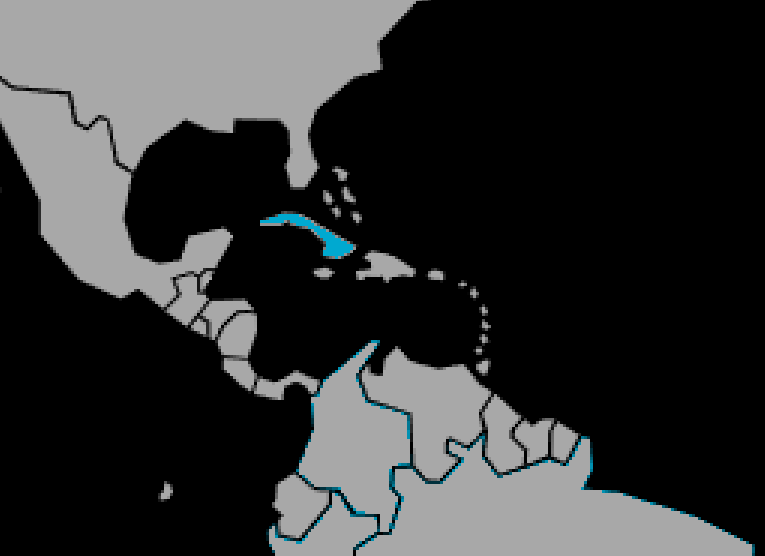

Systématique
- Ordre : Cyprinodontiformes
- Famille : Poeciliidae
- Genre : Girardinus
- Espèce : G. rivasi

Girardinus rivasi est une espèce de petit poisson vivipare endémique de l'île de Cuba, décrite par Barbour en 1945. Il fait partie de la famille des Poeciliidae, tout comme les Guppys et les Platys.
Il mesure environ 3 cm pour les mâles et jusqu'à 5 cm pour les femelles. Son corps est argenté avec des reflets parfois jaunâtres ou dorés, particulièrement sur le ventre. Il possède souvent de fines barres verticales sombres sur les flancs, bien que moins marquées que chez d'autres espèces du genre.
C'est un poisson discret, moins coloré et moins répandu que Girardinus metallicus, mais apprécié des amateurs de Poeciliidés sauvages pour sa rareté et son comportement intéressant.
C'est une espèce pacifique et grégaire, idéale pour un aquarium communautaire calme avec d'autres petites espèces. Il occupe généralement la zone médiane et supérieure de l'aquarium.
Il apprécie les bacs bien plantés qui lui offrent des cachettes et tamisent la lumière. Comme beaucoup de Poeciliidés sauvages, il est actif et curieux, explorant le décor à la recherche de nourriture.
Mode : vivipare (ovovivipare).
La fécondation est interne grâce au gonopode du mâle. La femelle donne naissance à des alevins vivants et autonomes après une gestation d'environ 4 semaines.
Les portées sont généralement modestes (10 à 30 alevins). Les parents ne s'occupent pas des petits et peuvent parfois les chasser, d'où l'importance d'une végétation dense pour protéger les alevins.
Dimorphisme sexuel : Très marqué. Le mâle est nettement plus petit et possède un gonopode (nageoire anale transformée en organe copulateur) très long, caractéristique du genre Girardinus. La femelle est plus grande, plus ronde, et possède une nageoire anale en éventail.
Espérance de vie : Environ 2 à 3 ans.
Il est strictement endémique de Cuba. Il fréquente les ruisseaux, les mares et les zones calmes des rivières, souvent riches en végétation aquatique et en algues. Les eaux de son habitat naturel sont généralement calcaires (dures) et basiques.
Répartition

Origine naturelle :
- Amérique Centrale (Caraïbes).
- Cuba (Endémique).
- Province de Pinar del Río.
Paramètres de maintenance
Température : 22 à 28 °C.
pH : 7,0 à 8,0 (préfère une eau basique).
GH : 10 à 25 °dGH (eau dure à très dure recommandée).
Volume conseillé : Minimum 40 à 60 L pour un petit groupe (harem : 1 mâle pour 2-3 femelles).
Régime alimentaire
Régime : omnivore / détritivore.
Dans la nature, il se nourrit de petits insectes, de larves, mais aussi d'algues et de détritus.
En aquarium, il accepte les paillettes et granulés, mais nécessite absolument un apport végétal régulier (algues, spiruline) et de la nourriture vivante (nauplies d'artémias, daphnies) pour rester en bonne santé.